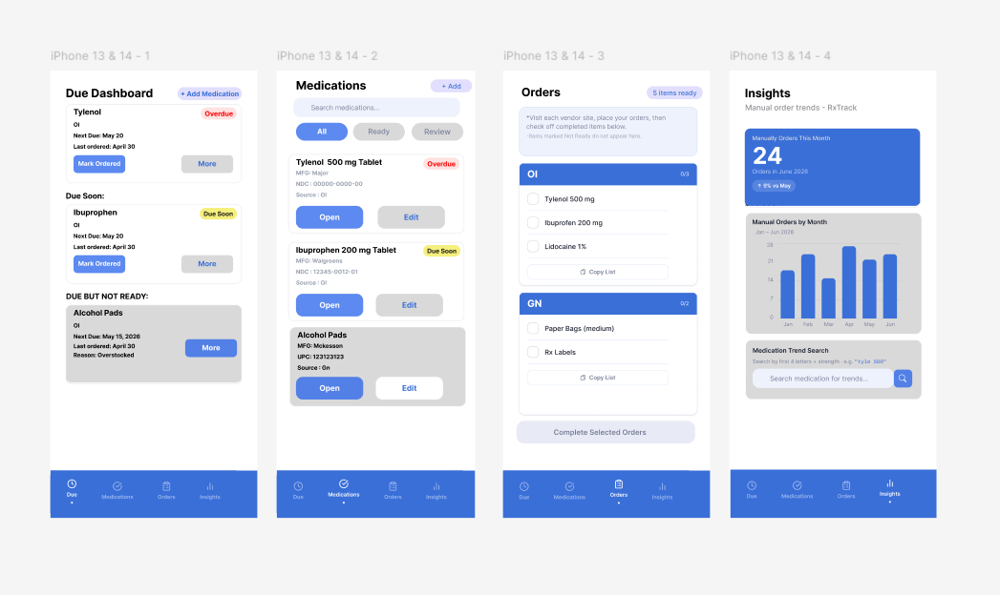
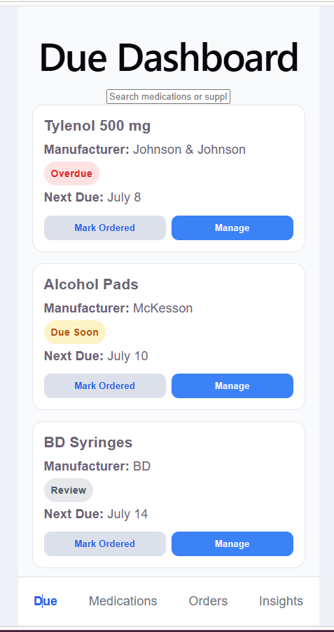
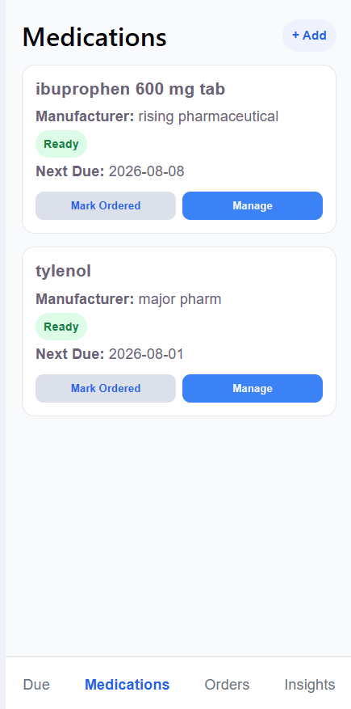
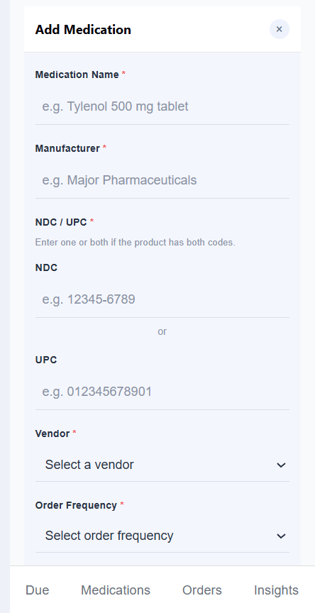

RxTrack
React • JavaScript • CSS • Supabase • PostgreSQL
Senior Capstone Project • In Development
Problem
Pharmacy staff may need to manually monitor medications and supplies that are not automatically ordered through their normal inventory system. When these items are tracked through handwritten notes, memory, or separate lists, it can be difficult to remember upcoming order dates, identify overdue items, and maintain an accurate ordering history.
Approach
I am developing RxTrack as a mobile-first pharmacy inventory and ordering application. The application uses React and JavaScript for the front end and Supabase with PostgreSQL for backend services and database storage.
The project is based on a real pharmacy workflow and is designed to help pharmacy staff organize medications and supplies that require manual ordering.
Solution
RxTrack is being developed to include:
- Medication and pharmacy supply tracking
- Overdue, due soon, and review statuses
- Search by medication name, NDC, or UPC
- Custom ordering frequencies and next due dates
- Medication readiness and review tracking
- Batch ordering for multiple medications or supplies
- Order history and medication insights
- Mobile-friendly navigation and interface design
Development Status
RxTrack is currently in active development as my senior computer science capstone project. The medication database, add medication form, edit medication feature, medication list, search, and due-date tracking are currently being built and tested.
Additional features, including batch order submission, order history, reporting, and inventory insights, will be added as development continues.
Current Outcome
This project has strengthened my experience with React components, state management, routing, form validation, responsive interface design, Supabase integration, PostgreSQL, and translating a real-world pharmacy workflow into a software application.
Project Screenshots
The screenshots below include both early interface designs and features that have already been implemented as RxTrack continues development.




Current Features
- Mobile-first responsive layout
- Bottom navigation between application pages
- Medication records stored with Supabase
- Add Medication form with required-field validation
- Edit existing medication records
- Medication search
- Ready, overdue, due soon, and review status badges
- Custom vendor and order frequency selections
Planned Features
- Batch order submission
- Medication and supply order history
- Monthly ordering charts and trends
- Email reminders for upcoming orders
- Duplicate NDC and UPC prevention
- Additional inventory and review controls